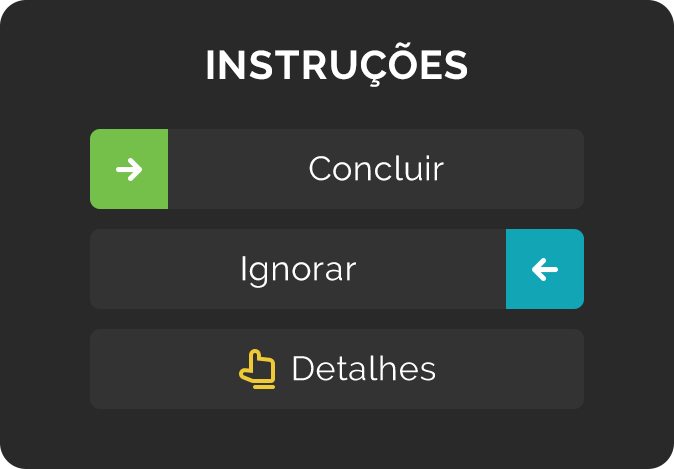

P: Como o Productive funciona? mais... menos...
R: O Productive ajuda você a desenvolver hábitos. Planeje o seu dia, monitore o que fez e não fez diariamente e celebre excelentes resultados.
Você pode ver os hábitos planejados para hoje e o período atual do dia na tela "Hoje".
Deslize para a direita para marcar seus hábitos como "concluídos". Marque todos os hábitos previstos para o dia como "concluídos" para conseguir um dia "perfeito". Acumular séries de dias "perfeitos" o ajudará a manter-se motivado e mais próximo de uma vida melhor.
P: Como as séries funcionam? mais... menos...
R: Sempre que marcar um hábito como "concluído", sem ignorá-lo, a sua série para esse hábito aumentará. Ignorar um hábito não interromperá sua série, mas também não a aumentará. Caso perca um hábito (ou seja, não o marque como "concluído" ou "ignorado"), sua série será interrompida.
Caso o hábito esteja agendado tanto para a manhã quanto para a noite, você precisará concluir ambos para que isso seja contado em sua série.
Marque todos os hábitos previstos para o dia como "concluídos", consiga um dia "perfeito" e veja suas séries crescerem nas Estatísticas.
P: Quando usar a função ignorar? mais... menos...
R: Você só deverá ignorar um hábito quando tiver um bom motivo. Por exemplo, quando não pode levar o lixo para fora pois está viajando de férias. Usar a função ignorar não interromperá sua série, mas o impedirá de conseguir um dia perfeito.
Caso o hábito esteja previsto para um determinado dia e não seja marcado como "concluído" ou "ignorado", será automaticamente marcado como "esquecido". Hábitos esquecidos interrompem sua série e resultarão em uma mensagem de "em atraso" na próxima vez em que estiverem previstos.
Não é necessário ignorar hábitos semanais ou mensais nos dias em que não concluí-los.
P: Monitorando hábitos ruins mais... menos...
R: Hábitos ruins podem ser monitorados da mesma forma que os bons hábitos.
Digamos que você queira reduzir o consumo de junk food para duas vezes por semana. Basta adicionar um hábito de cinco vezes por semana para "Sem junk food" e, em seguida, marcá-lo como "concluído" nos dias em que não comer junk food.
P: Como eu edito os dias passados? mais... menos...
R: Você pode exibir os dias passados tocando na data no topo da tela "Hoje", usando o calendário em Estatísticas ou os detalhes do hábito (tocando em um hábito).
Lembre-se: você só poderá editar os hábitos nas datas em que foram criados.
P: Como os lembretes funcionam? mais... menos...
R: Você pode configurar lembretes gerais em Menu->Lembretes para ter um plano para cada período do dia e um resumo no fim do dia.
Você também pode adicionar lembretes cronometrados para hábitos individuais. Esses lembretes só serão enviados nos dias em que os hábitos aparecerem em sua lista, caso não tenham sido marcados como "concluídos" ou "ignorados"
PREMIUM
O Productive Premium é uma assinatura paga que oferece a você acesso a hábitos ilimitados.
Fim do período de avaliação e renovação da assinatura
Quando o período de avaliação chegar ao fim, o Google Play automaticamente passará a realizar a cobrança da assinatura, através do cartão de crédito informado pelo usuário na compra inicial, no valor definido para a assinatura integral e nos intervalos determinados pelo período da assinatura. Se necessário, você poderá cancelar a assinatura a qualquer momento durante o período de avaliação. Nesse caso, a assinatura permanecerá ativa até o fim do período de avaliação, mas o Google Play não a renovará automaticamente. Ao fim do período de avaliação a assinatura será considerada encerrada, e o Google Play não realizará nenhuma cobrança em sua conta.
Cancelamento da Assinatura
As assinaturas no Google Play renovam-se automaticamente, a não ser que você cancele-as. A desinstalação do aplicativo não interromperá automaticamente a sua assinatura. Você pode ver o status de todas as suas assinaturas e cancelá-las, se necessário, indo até a Google Play Store e tocando em Menu > Assinaturas. Você também pode acessar a página diretamente através do link http://play.google.com/store/account/subscriptions ou usando um computador para visitar o site play.google.com e clicar em Minhas assinaturas no menu à esquerda.
Quando você cancela uma assinatura, não recebe do Google Play um reembolso do atual ciclo de cobrança. Em vez disso, o Google Play permite que o usuário acesse a assinatura cancelada até o fim do atual clico de cobrança, quanto encerrará a assinatura.
Desinstalar o aplicativo
Quando você decide desinstalar um aplicativo com assinaturas compradas, o aplicativo da Play Store o notifica sobre as assinaturas ativas. Caso decida prosseguir com a desinstalação, o aplicativo será removido, mas as assinaturas permanecerão ativas e a cobrança recorrente prosseguirá. Você poderá cancelar as assinaturas associadas a qualquer momento na tela Meus aplicativos e jogos no aplicativo da Play Store.
Notificações
Você poderá desativar as notificações a qualquer momento em Configurações > Notificações > Notificações de Aplicativos. Toque no aplicativo do Productive e depois toque no botão de alternância para bloquear as notificações por push.
Suporte
Caso tenha alguma dúvida ou comentário, sinta-se à vontade para contatar-nos via e-mail productive-android@bendingspoons.com.
Todo o conteúdo nesta app, como texto, gráficos e imagens, é da propriedade da Apalon ou dos seus fornecedores de conteúdo e está protegido pela legislação dos Estados Unidos da América e por legislação internacional. Os logótipos e nomes são marcas comerciais da Apalon, dos seus afiliados e parceiros.
EULA | Política de Privacidade | AdChoices
Personalize Your Ad Experience © 2019 IAC Search & Media Technologies Limited. Todos os direitos reservados. O software da Companhia contém o software de código aberto listado aqui.